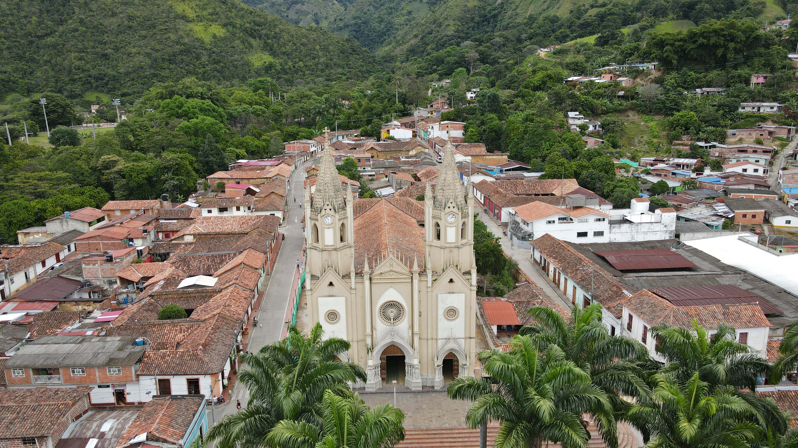
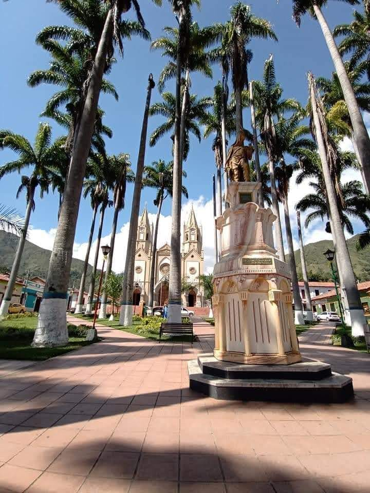

La Plaza Principal o Parque Central es el punto de encuentro por excelencia del municipio, un lugar donde el tiempo parece haberse detenido. Conserva su trazado original colonial, rodeada de hermosas casonas históricas que mantienen la arquitectura tradicional de la región: imponentes fachadas blancas, techos de teja de barro cocido, puertas de madera tallada y amplios aleros que protegen a los caminantes del sol.
Pasear por la plaza es un viaje interactivo al pasado. Aquí se respira la auténtica identidad cultural salazareña, perfumada por el inconfundible aroma del café tostado. El parque no es solo un adorno, es el ágora viva donde se celebran los festivales culturales, las retretas musicales y donde los ancianos del pueblo se sientan a contar las leyendas de los tiempos de la colonización.
Dominando la cabecera de la plaza se encuentra la majestuosa Iglesia Parroquial de San Pablo. Esta imponente estructura de estilo arquitectónico republicano, combinada con elementos coloniales, se alza orgullosa con su alta torre de campanario, la cual sirve como brújula visible desde casi cualquier punto de las montañas que rodean el casco urbano.
En su interior, la iglesia es una verdadera joya artística. Al cruzar sus grandes puertas de madera, los visitantes son recibidos por hermosos vitrales coloridos que bañan la nave central de luz, y altares tallados a mano que son piezas invaluables del patrimonio nacional. La iglesia ha sido testigo mudo del desarrollo del municipio y es el epicentro de las monumentales procesiones de Semana Santa, atrayendo a miles de feligreses cada año en una de las muestras de fe más grandes del departamento.

